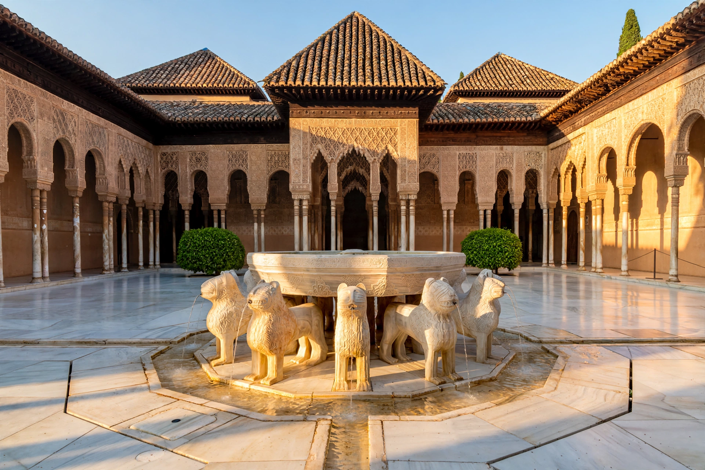

| Alhambra | |
|---|---|
| Location | Granada, Andalusia, Spain |
| Built | 9th century fortress; palace city mainly 1238–1358 (Nasrid dynasty) |
| Style | Nasrid / Islamic (Moorish) architecture |
| UNESCO | World Heritage Site (1984, extended 1994) |
| Name origin | Arabic al-ḥamrāʾ, "the Red One" |

The Alhambra is a palace and fortress complex in Granada, Andalusia, Spain. Built chiefly during the mid-13th to 14th centuries by the Nasrid dynasty, the last Muslim rulers of al-Andalus, it is one of the most famous monuments of Islamic architecture and among the best-preserved palaces of the historic Islamic world. Its name derives from the Arabic Qalʿat al-Ḥamrāʾ, "the Red Fortress", after the reddish colour of its walls.
A fortress stood on the Sabika hill from the 9th century; after 1238 Muhammad I ibn al-Ahmar, founder of the Nasrid Emirate of Granada, made it his royal residence. His successors, above all Yusuf I and Muhammad V, built the celebrated palace halls. In 1492 the Catholic Monarchs Ferdinand and Isabella received the surrender of the last emir, Muhammad XII (Boabdil), ending Muslim rule in Iberia. Charles V later inserted a Renaissance palace into the complex, demolishing part of the Nasrid winter palace. Neglected for centuries and damaged during the Napoleonic occupation, the Alhambra was romantically rediscovered in the 19th century — Washington Irving's Tales of the Alhambra (1832), written after living there, made it world-famous — and progressively restored.
The Nasrid palaces are organised around courtyards: the Mexuar council chamber; the Comares Palace with the Court of the Myrtles and the great Hall of the Ambassadors beneath the massive Comares Tower; and the Palace of the Lions, whose Court of the Lions centres on a fountain borne by twelve marble lions, ringed by halls with soaring stalactite-like muqarnas vaults, intricate carved stucco and over 10,000 Arabic inscriptions — poetry and Qur'anic text in ornate calligraphy, including the Nasrid motto "There is no victor but God". Above stands the Alcazaba fortress; across a ravine lies the Generalife, the sultans' summer palace and gardens.
Designated a UNESCO World Heritage Site in 1984, the Alhambra is one of Spain's most visited monuments, with visitor numbers capped to protect the fabric. It stands as the emblematic monument of cultural heritage shared between Islamic and Spanish traditions.
This article was recreated from memory as part of a web-reconstruction exercise.